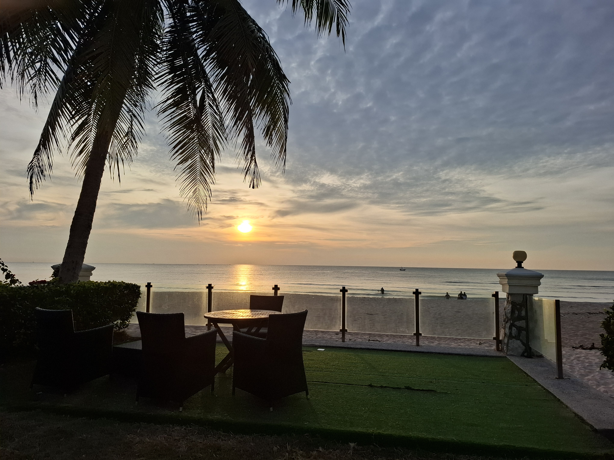

ชื่อ-นามสกุล: อภิวัชร์ สุขะเต
ชื่อเล่น: ณัฏฐ์
เลขประจำตัว: 6909650795
มหาวิทยาลัย: มหาวิทยาลัยธรรมศาสตร์ รังสิต
คณะ: วิทยาศาสตร์และเทคโนโลยี
สาขา: วิทยาการคอมพิวเตอร์

ชื่อ-นามสกุล: อภิวัชร์ สุขะเต
ชื่อเล่น: ณัฏฐ์
เลขประจำตัว: 6909650795
มหาวิทยาลัย: มหาวิทยาลัยธรรมศาสตร์ รังสิต
คณะ: วิทยาศาสตร์และเทคโนโลยี
สาขา: วิทยาการคอมพิวเตอร์
งานนี้เป็นการสร้างเว็บไซต์ My First Learning Portfolio เพื่อแนะนำตนเอง โดยมีส่วนประกอบสำคัญคือ ส่วนหัวข้อเว็บไซต์ (Header), ส่วนข้อมูลส่วนตัวและรูปโปรไฟล์ (About Me), ส่วนอธิบายรายละเอียดชิ้นงาน (What/How I Built It), ส่วนสะท้อนการเรียนรู้ (Reflection) และส่วนท้ายเว็บ (Footer)
การพิจารณาเรื่อง Client / Server ในขณะที่เปิดเว็บไซต์นี้ขึ้นมาจากเครื่องของตนเอง ถือว่ามี Client เกิดขึ้นแล้ว แต่ยังไม่มี Server เนื่องจากเว็บเบราว์เซอร์ ทำหน้าที่เป็น Client ในการอ่านและประมวลผลไฟล์ HTML/CSS โดยตรงจากดิสก์ภายในเครื่อง โดยไม่ได้มีการส่งคำขอ (Request) ผ่านเครือข่ายไปยัง Web Server
งานนี้สร้างขึ้นโดย HTML และ CSS โดยมีขั้นตอนสำคัญดังนี้:
เครื่องมือและแหล่งข้อมูลที่ใช้: VS Code เป็นเครื่องมือหลักในการเขียนโค้ด ร่วมกับแหล่งเรียนรู้เพิ่มเติมอย่าง W3Schools สำหรับอ้างอิง CSS กับ HTML และศึกษาไอเดีย UI/UX เพิ่มเติม